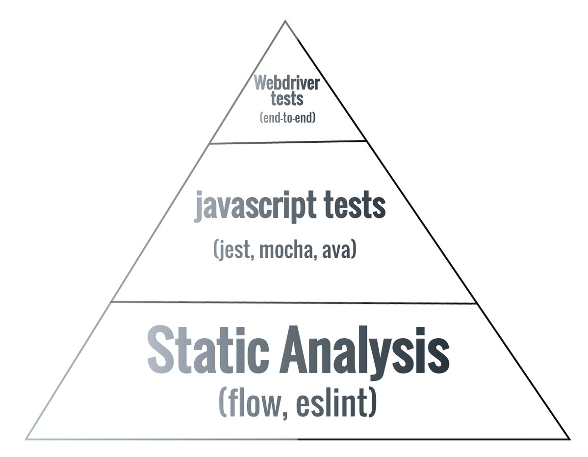

class: center, middle # Introduction to Flow[type] --- # About me * Full stack developer @ Vistaprint Digital * Coauthor of [*Mastering React Native*](https://www.packtpub.com/web-development/mastering-react-native) (Packt Publishing) * Twitter [@EricMasiello](https://twitter.com/ericmasiello) * Freelance @ [Syn By Design](http://synbydesign.com) --- # Agenda 1. What is Flow 2. Setup 3. Flow 101 4. Editor integration 5. Using in Web apps 6. Using in React Native --- # What is Flow? 1. Static type checker for JavaScript 2. Works in browser JavaScript, Node, React Native, etc. --- # But what is static type checking? <blockquote> "This generally means that the type of a variable is known at compile time. For some languages this means that you as the programmer must specify what type each variable is (e.g.: Java, C, C++); other languages offer some form of type inference, the capability of the type system to deduce the type of a variable (e.g.: OCaml, Haskell, Scala) — stackoverflow." </blockquote> --- # Why is static type checking useful? * Provides type safety (no more "undefined is not a function") * Improved developer experience (jump to methods, autocompletion) * Can aid in testing ---  --- # Flow or TypeScript? --- # Setup 1. Install *flow-bin* `yarn add -D flow-bin` 2. Run `./node_modules/.bin/flow init` 3. Add `/* @flow */` to files you wish to check